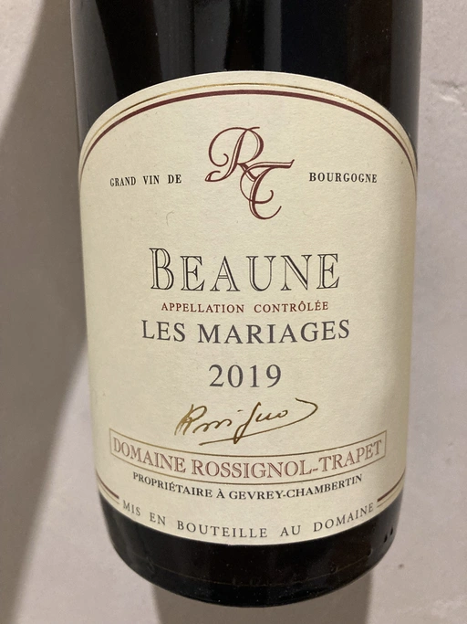

- Type
- Red Still, Dry
- Producer
- Domaine Rossignol-Trapet
- Vintage
- 2019
- Location
- France, Beaune AOC
- Grapes
- Pinot Noir
- Alcohol
- 13
- Sugar
- 0.2
- Price
- 1106 UAH
- Cellar
- N/A
Producer
Domaine Rossignol-Trapet was established through the alliance of two families. The Rossignols were winemakers since the 16th century in Volnay. The Trapets - since the 18th century in Gevrey-Chambertin. Domaine owns 14 ha of old vineyards in the renowned villages of Beaune, Savigny-les-Beaune and Gevrey-Chambertin. Most of them are Pinot Noir, and only 0.7 ha are Chardonnay.
Nicolas and David Rossignol have been running the Domaine since the 1990s. They produce sophisticated, gorgeous and elegant wines.
Ratings
2022-11-03 - 8.50
Les Mariages is a delightful wine, delicate and delicious. The bouquet is warm and attractive with notes of strawberry, cherry, milk chocolate, red flowers and forest floor. Medium body, perfectly balanced, flavourful and gentle. It is still young and has potential, but even today, it’s hard to resist its beauty. Great value.
Related